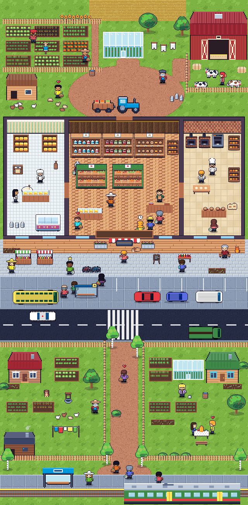

Обычный летний день в нашей графике. Это ещё не игра, а один кадр: так должен выглядеть экран, прежде чем писать код. Люди, машины, деревья, дома, полки и товары взяты из «Магазинчика», фермерское нарисовано заново в той же палитре.

Коровы, куры, грядки шести культур, пшеница, амбар, курятник, теплица, ульи, трактор с прицепом, сыроварня со всей утварью, деревянный прилавок с весами, стол с тестом и мешки муки, веранда, баня, самовар, электричка и платформа.
Реплики, таблички и верхняя панель сделаны как в игре, но поверх картинки. Подписи на табличках и цифры в панели — пример.